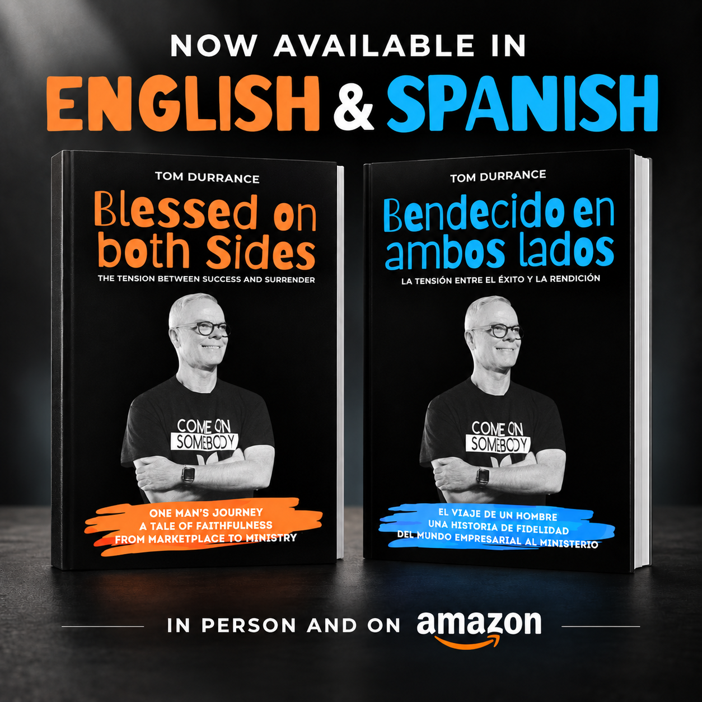
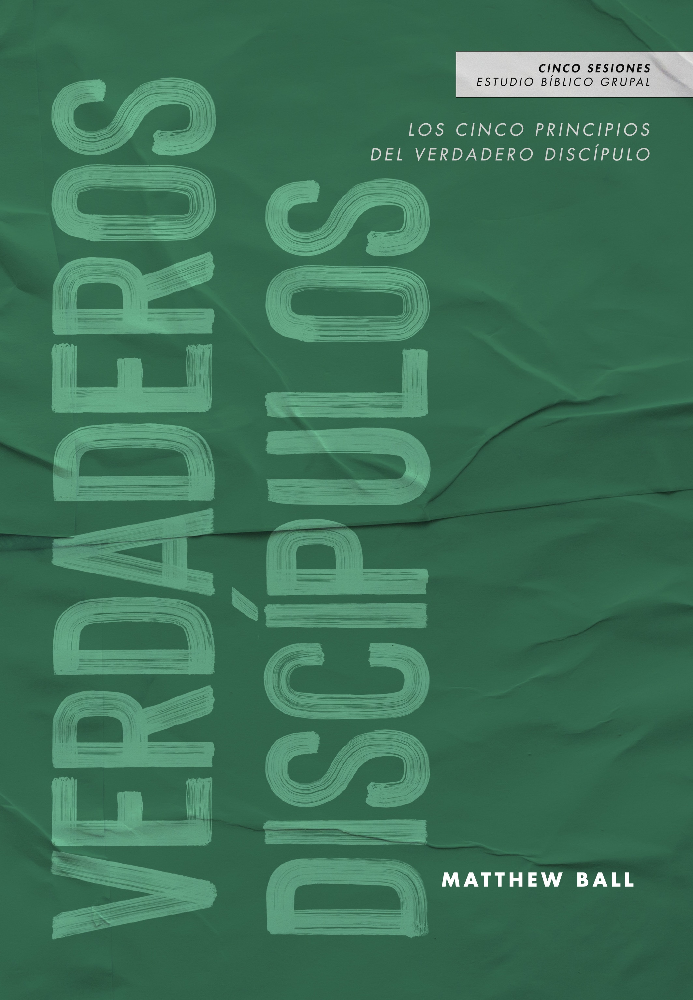

Artículos de Fe
Consulta el documento de nuestra fe apostólica para tu estudio personal y la enseñanza en tu iglesia.
Leer el PDF ↗Lecturas y recursos para fortalecer tu fe, profundizar en la doctrina apostólica y acompañar tu servicio a Dios.

La tensión entre el éxito y la rendición
El viaje de un hombre y una historia de fidelidad, del mundo empresarial al ministerio. Un libro de Tom Durrance, disponible en español e inglés.
Compra en Amazon. Confirma el idioma y formato antes de comprar.

Los cinco principios del verdadero discípulo
Un estudio bíblico en español de cinco sesiones para explorar los principios del verdadero discípulo y crecer juntos en la fe.
Consulta el documento de nuestra fe apostólica para tu estudio personal y la enseñanza en tu iglesia.
Leer el PDF ↗Conoce nuestra escuela y las oportunidades para seguir preparándote en la Palabra de Dios.
Conocer la escuela